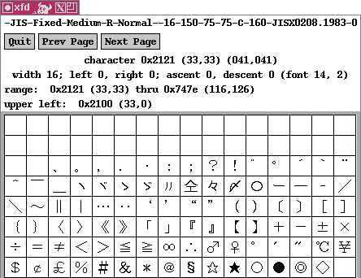

CJK is an acronym for "Chinese, Japanese, Korean". What's common to these three East Asian languages is that they all use a substantial number of ideographic characters (several thousand, not enumerable with 8 bits) historically dating back to the Chinese Han dynasty. These Han ideographs are called hanzi in Chinese, kanji in Japanese, and hanja in Korean and are unified as "CJK ideographs" in Unicode. For most ideographs, the pronunciation varies between the different languages but the meaning is similar so that Chinese text is somewhat comprehensible to Japanese readers.
On X11, you can have a look at the JIS X 0208 code chart with the command
xfd -fn "*jisx0208*" &

The JIS X 0208 characters are organized in 94 rows ("ku") of 94 cells ("ten") so that they can be mapped over the 94 printable G0 characters of ASCII as specified by ISO 2022. JIS X 0208 is thus structurally limited to 94×94 = 8'836 characters and with that low number no feasible replacement for Unicode with its 40'000+ characters. JIS X 0208 has been extended through a companion JIS X 0212 holding a 94×94 grid of supplementary symbols, accented letters and additional kanji, that can be accessed through ISO-2022 shift sequences.
JIS X 0208 was the first double-byte character set (DBCS). There are various character encoding schemes to access these double-byte characters:
Much of this is described in Ken Lunde's book Understanding Japanese Information Processing and its online companion CJK.INF.
On Unix/X11, the JIS X 0208 kanji can be used in the kterm terminal emulator.
Chinese and Korean standardizers followed the JIS X 0208 example and defined their own 94×94 grids. {ISO-2022,EUC}-{CN,TW,KR} are the MIME labels used for these national standard coded character sets. GB 2312 is the Chinese equivalent to JIS X 0208 holding 6'763 hanzi, KS C 5601 the Korean DBCS holding 4'888 hanja and 2'350 Hangul syllables, and CNS 11643 Plane 1 the Taiwanese (Traditional Chinese) standard (albeit the not formally specified industry-standard "Big5" is used more often in Taiwan).
The Chinese terminal emulator cxterm can handle GB and Big5 hanzi using its own configurable input dictionary.
Roman Czyborra
November 23, 1998